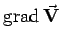

Inhalt Index DeskTop Bronstein

 Vektoranalysis und Feldtheorie Räumliche Differentialoperationen Übersicht zu den räumlichen Differentialoperationen
Vektoranalysis und Feldtheorie Räumliche Differentialoperationen Übersicht zu den räumlichen Differentialoperationen


| Operator | Symbol | Verknüpfung | Argument | Ergebnis | Bedeutung |
| Gradient | Skalar | Vektor | maximaler Anstieg | ||
| Vektorgradient |  | Vektor | Tensor 2. Stufe | ||
| Divergenz | Vektor | Skalar | Quellen bzw. Senken | ||
| Rotation | Vektor | Vektor | Wirbel | ||
| LAPLACE- | Skalar | Skalar | Potentialfeld- | ||
| Operator | Vektor | Vektor | quellen |